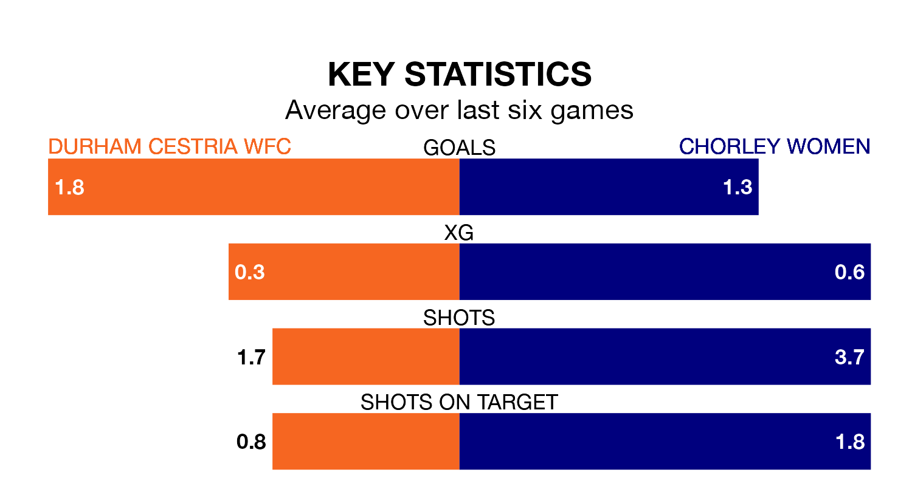

Chorley Women travel to Durham Cestria WFC on early Sunday in Women's National League Division One North.
The visitors come into the game on the back of a defeat in their last match, having lost to Norton and Stockton 5-1 at home.
Durham Cestria WFC, meanwhile, won their last match, 3-0 against Barnsley Women.
With 11 goals in 10 games so far this season, Chorley are the league's second-lowest scorers with 1.1 goals per game. And they are conceding more than average, letting in 20 goals at a rate of 2.0 per game.
Durham Cestria WFC are also below average scorers, with 1.5 goals per game, compared to a league average of 1.7. They have conceded 0.6 goals per game.
The hosts are in reasonable form in Women's National League Division One North, with three wins and two draws from their last six games.
With a win and two draws over that period, the away team's form is much worse – they have taken five points from 18, compared to Durham Cestria WFC's 11.
In the last five years, Durham Cestria WFC and Chorley have played each other on four occasions. Durham Cestria WFC won three of them and Chorley one.
On average, Durham Cestria WFC scored 4.5 goals and Chorley 1.0 in those matches.
Their last meeting was on May 7, when Durham Cestria WFC won 8-0 away.
Durham Cestria WFC are fifth in the table after 11 games, of which they have won five and drawn two, earning 17 points.
Chorley are three places behind the home side in eighth, with three wins and three draws putting them on 12 points.
Updated: 13:09 (UTC), 17/01/24